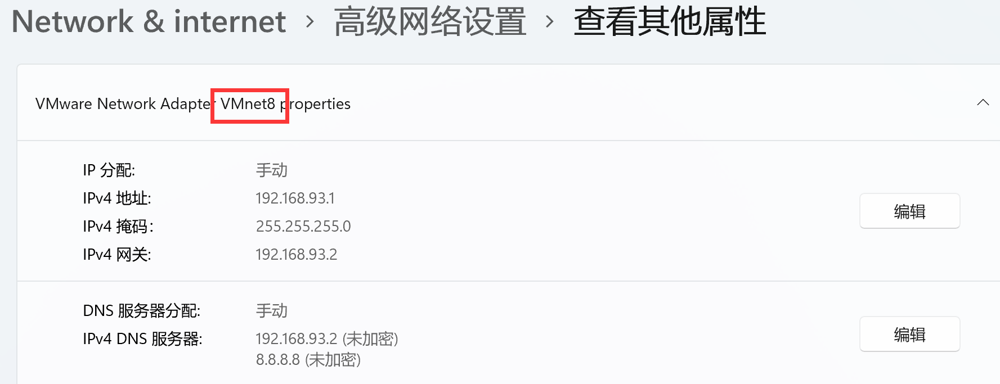

使用VM搭建hadoop集群
1. 准备
2. 安装hadoop101虚拟机
- 软件选择: 最小安装是纯命令行
- 安装位置: 选择手动和以自由配置盘符配置及大小, 设备类型(LVM相比于标准分区能自由扩缩容)
- KDUMP可以暂时不要
- 设置用户名密码: 示例 username: hadoop101 password: 000000
3. 配置本机网络环境
- 关闭防火墙
- VM配置VMnet8
编辑 -> 虚拟网络编辑器
- Windows配置VMnet8

4. 配置虚拟机网络环境
- 关闭虚拟机防火墙:
systemctl disable firewalld.service - 关闭NetworkManage:
systemctl stop NetworkManagersystemctl disable NetworkManager
- !!!修改网卡配置:
vim /etc/sysconfig/network-scripts/ifcfg-ens33
- 重启网卡:
service network restart
可以通过ping 8.8.8.8检测是否通
5. 克隆前
- 安装辅助包管理器:
yum install -y epel-release - 未知:
kill -9 3030 - 卸载系统自带JDK:
- 查看:
rpm -qa | grep java - 卸载:
sudo yum remove packagename
- 修改虚拟机host
- 修改hostname如下:
nano /etc/hostname
- 修改hosts如下:
nano /etc/hosts
6. 克隆(完整克隆)后
- 通过vmware进行clone出n台相同的虚拟机
- 修改每台克隆出的网卡IPADDR:
vim /etc/sysconfig/network-scripts/ifcfg-ens33 - 修改hostname:
nano /etc/hostname